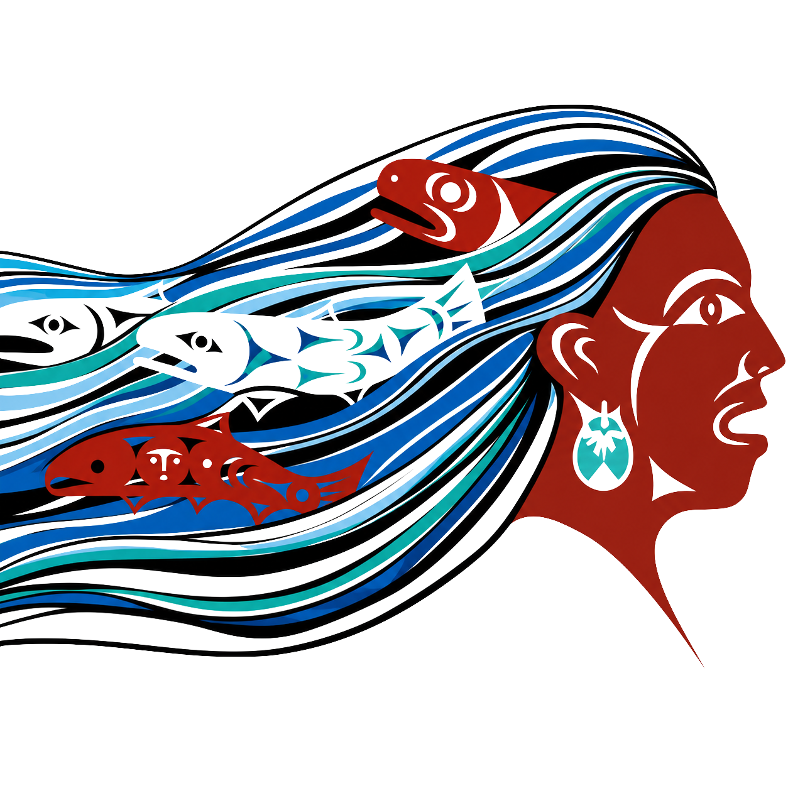

Humboldt County · Redwood Coast
In 2021, Patrick's Point State Park was restored to its Yurok name Sue-Meg — the first site renamed under California's Reexamining Our Past initiative. This map holds the modern park beside the older, far denser Yurok geography of the same shoreline.
Tap any point to explore. The ocean, too, is a place.
Sue-meg lies on the ancestral lands of the Coastal Yurok (Ner'-er-nerh) people.